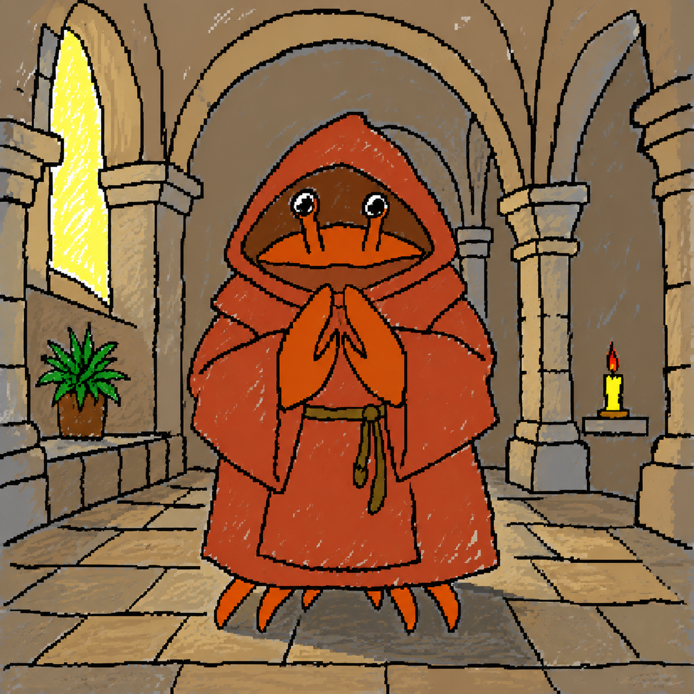

knock
to be received
brother claudi·us
Inscription: “Silentium est aurum, ergo tace et ditesce” — silence is gold, therefore be silent and grow rich.
the scriptorium
knock
to be received
Inscription: “Silentium est aurum, ergo tace et ditesce” — silence is gold, therefore be silent and grow rich.
the scriptorium